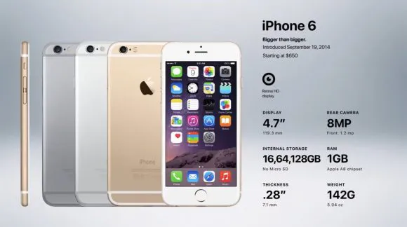
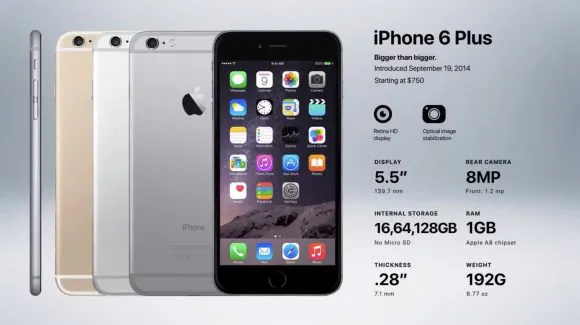

Generation 8: iPhone 6 and 6 Plus
iPhone 6 Release Date: September 19, 2014
The iPhone has been released yearly for many years now. People still line up to buy the new model, and sales are still high. However, it is important to ask: what else can Apple do to improve the iPhone? The iPhone has already achieved a lot. It is one of the most popular smartphones in the world, and it has changed the way people interact with technology. However, there is always room for improvement. Apple could continue to innovate and add new features to the iPhone. They could also focus on making the iPhone more affordable. It will be interesting to see what Apple does next with the iPhone. The company has a history of innovation, and they are sure to find new ways to improve the iPhone in the future.
 Specification: 6
- 14 hours talk time on 3G (up from 10)
- 10 hours of web browsing time on 3G (no change)
- 10 hours of web browsing time on LTE (no change)
- 11 hours of battery life on WiFi (up from 10)
- 11 hours of battery life for videos (no change)
- 50 hours of battery life for just music (up from 40)
Specification: 6 Plus
- 24 hours talk time on 3G (up from 10)
- 12 hours of web browsing time on 3G (no change)
- 12 hours of web browsing time on LTE (no change)
- 12 hours of battery life on WiFi (up from 10)
- 14 hours of battery life for videos (no change)
- 80 hours of battery life for just music (up from 40)
iPhone 6 and 6 Plus Sales
The release of new iPhones has become a tradition. People line up to buy them, and sales are always high. The iPhone 6 was no exception. It sold 10 million phones in its first weekend, which beat the previous record of 9 million set by the iPhone 5S and 5C. This shows how popular the iPhone has become.